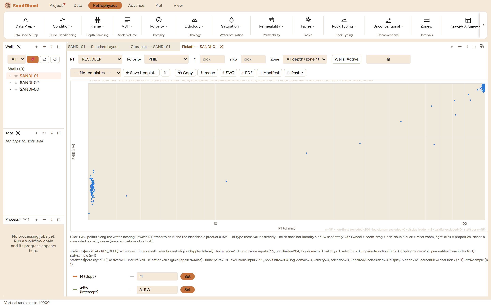

The Pickett plot (Pickett, 1966) is log porosity against log resistivity. On those axes Archie's equation is a straight line: the water-bearing points fall along a trend whose slope is −m and whose position fixes a·Rw, and hydrocarbon points sit off it to higher resistivity. Reach for it when the water zone is identifiable and you want m and the water term from the well's own data rather than from a table.

The panel states its own contract, in its own words:
Click TWO points along the water-bearing (lowest-RT) trend to fit M and the identifiable product a·Rw — or type those values directly. The fit does not identify a or Rw separately. Ctrl+wheel = zoom, drag = pan, double-click = reset zoom, right-click = properties. Needs a computed porosity curve (run a Porosity module first).
That second sentence is the physics, not a limitation of the software: one straight line has two degrees of freedom, so the slope gives m and the intercept gives only the product a·Rw. Splitting the product needs outside information (a measured Rw, or a declared a), which is why the panel refuses to pretend otherwise.
The audit line keeps the log axes honest. On the example well it reads n=191 with non-finite excluded=204 and display hidden=12: the 204 are samples where PHIE or RES_DEEP is missing (PHIE exists only where the porosity module answered), and the 12 are points outside the current axis window. The statistics custody lines state the same basis per axis, so the population the fit saw is exactly accounted.